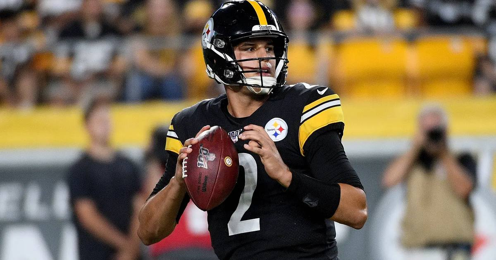

Mason Rudolph starts as Steelers host Broncos on Black Friday
Mason Rudolph gets the start for Pittsburgh against the 8-2 Broncos on Black Friday, with the Steelers clinging to the final wild-card spot after two straight losses.

Disclosure: this post contains affiliate links. I earn a commission on qualifying purchases.
The move
Mason Rudolph starts at quarterback for Pittsburgh in the Black Friday game against Denver. The Steelers made the switch after benching Aaron Rodgers late Tuesday night, then released Rodgers less than a day later — ending his time in Pittsburgh outright.
Rudolph has been here before. Every time the Steelers have needed a late-season spark at quarterback, he has been the one to step in, and Friday is no different: a home game, a national window, and a season on the line.
The stakes
Pittsburgh clings to the final wild-card spot after two straight losses. Another loss on Friday would put that spot in real danger with the schedule tightening.
Denver arrives as one of the hottest teams in football. The Broncos are 8-2 and riding six straight wins, and they sit in the thick of the AFC's top seeds. A Pittsburgh win would be a statement; a Denver win keeps the Broncos rolling into December.
The matchup
Kickoff is 3 PM ET at Acrisure Stadium, streaming nationally on Amazon Prime Video. The Steelers are 6-4, the Broncos 8-2, and the question hanging over the afternoon is simple: how much does the quarterback change move Pittsburgh?
Rudolph's job is to protect the ball against a Denver pass rush that has feasted on mistakes, and to lean on a Steelers defense built around T.J. Watt and Cam Heyward to keep Bo Nix and the Broncos' offense in check. Denver's side of it is just as clear — take advantage of a quarterback making his first start of the season and keep the win streak alive.
Watch
Source: Steelers vs. Broncos Week 12 Preview - Keys To Victory & Score Prediction | Rudolph To The Rescue? — Chat Sports. A full preview of the Black Friday matchup, breaking down the keys to victory for both sides and a score prediction after the Steelers' quarterback change.
Sources
• Mason Rudolph starts at quarterback for Pittsburgh in the Black Friday game against Denver — Vegas Odds
• Steelers cling to the final wild-card spot after two straight losses — USA Today
Gear up: Fanatics